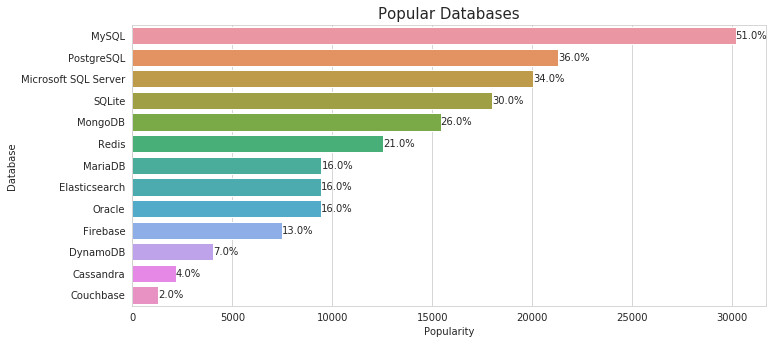

Check this out before starting your Career
Latest Software industry trends
These fields are undergoing a positive increase in the market. With Data engineering topping the chart.
This bar chart depicts number of job searches per month for a particular tech job role. Software engineer is the most searched job role

The above graph shows the popularity of databases in today's industry. Relational Databases rank the highest amongst them.

The given chart shows the use of Languages by the IT industry. Javascript is the most used language around the globe.
The demand for certain roles has increased a lot in the year 2019. AR/VR has the greatest demand. The above chart specifies the same.
Python is gaining huge popularity recently. The above stats show the payscale of engineers working in python.
As glorified as the software industry sounds, it has many challenges. The chart explains the situation better.